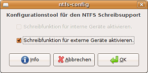
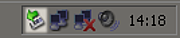
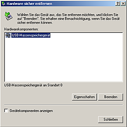

ntfs-3g
Archivierte Anleitung
Dieser Artikel wurde archiviert, da er - oder Teile daraus - nur noch unter einer älteren Ubuntu-Version nutzbar ist. Diese Anleitung wird vom Wiki-Team weder auf Richtigkeit überprüft noch anderweitig gepflegt. Zusätzlich wurde der Artikel für weitere Änderungen gesperrt.
Anmerkung: Der Schreib- / Lesezugriff gehört inzwischen zur Grundinstallation von Ubuntu, so dass keine speziellen Schritte mehr notwendig sind.
Zum Verständnis dieses Artikels sind folgende Seiten hilfreich:
Der NTFS-3G Treiber  ist ein "Open Source" Projekt und ein frei erhältlicher NTFS-Treiber für Linux, FreeBSD, Mac OS X, NetBSD, und Haiku. Dieser baut auf dem Linux-NTFS-Projekt auf und verwendet FUSE zur Implementation des Dateisystems im Userspace und steht unter der GPL
ist ein "Open Source" Projekt und ein frei erhältlicher NTFS-Treiber für Linux, FreeBSD, Mac OS X, NetBSD, und Haiku. Dieser baut auf dem Linux-NTFS-Projekt auf und verwendet FUSE zur Implementation des Dateisystems im Userspace und steht unter der GPL  . Es werden dabei Windows XP, Windows Server 2003, Windows 2000 und Windows Vista Dateisysteme unterstützt. Damit lassen sich (außer verschlüsselte und komprimierte) Dateien auf Festplatten mit dem NTFS-Dateisystem bearbeiten, löschen und anlegen.
. Es werden dabei Windows XP, Windows Server 2003, Windows 2000 und Windows Vista Dateisysteme unterstützt. Damit lassen sich (außer verschlüsselte und komprimierte) Dateien auf Festplatten mit dem NTFS-Dateisystem bearbeiten, löschen und anlegen.
Was dieser Treiber aber nicht kann ist z.B.:
auf verschlüsselte Dateien zugreifen
komprimierte Dateien schreiben (lesen funktioniert)
den Dateibesitzer und die Zugriffsrechte ändern
Seit Ubuntu Gutsy Gibbon 7.10 wird der NTFS-Treiber bei der Installation automatisch mitinstalliert.
Achtung!
Installation¶
Es werden alle nötigen Pakete von Haus aus mitinstalliert. Sollte man eine minimale Installation durchgeführt haben und möchte diese Funktionalität nachrüsten, so installiert [1] man das Paket
ntfs-3g
Manuelle Installation¶
Um ntfs-3g aus dem Quellcode erstellen zu können werden die folgenden Paket installiert [1].
fuse-utils (bis Dapper in universe, [2])
libfuse2
libfuse-dev
libselinux1-dev
Auf der Downloadseite wird die neueste stabile Version heruntergeladen und entpackt [4]. Nun wird ntfs-3g kompiliert [5] und installiert. Weiter in der Anleitung geht es mit der Konfiguration.
Konfiguration¶

Automatisch¶
Nun kann ntfs-config aus dem GNOME-Menü
"Anwendungen -> Systemwerkzeuge -> NTFS Konfigurationstool"
gestartet und konfiguriert werden (siehe Bild rechts), wobei für den Start aber Root-Rechte benötigt werden und man nach seinem Passwort gefragt wird.
Man kann festlegen, ob interne sowie externe mit NTFS formatierte Datenträger mit Unterstützung zum Schreiben eingebunden werden sollen. Schließt man nun z.B. eine externe NTFS-formatierte Festplatte an, so wird diese automatisch mit der Möglichkeit zum Schreiben eingebunden.
Manuell¶
Um eine NTFS-Partition in das System einzuhängen, öffnet man ein Terminal [3] und führt folgende Schritte aus. Zuerst sollte ein Ordner angelegt werden, in welchem die NTFS-Partition eingebunden werden soll. Für diesen Ordner muss der Benutzer Schreibrechte besitzen.
sudo mkdir -p /media/ntfs
Die Bezeichnung (z.B "/dev/hda2") der NTFS-Partition kann mittels folgendem Befehl ermittelt werden:
sudo fdisk -l | grep NTFS
Nun wird die NTFS-Partition eingehängt. Die Bezeichnung "/dev/hdXY" muss durch die im vorangegangenen Schritt ermittelte Bezeichnung ersetzt werden.
sudo ntfs-3g /dev/hdX /media/ntfs -o locale=de_DE.utf8,umask=000
umask=000 sorgt dafür, dass neu erstellte Verzeichnisse von allen durchsucht, geschrieben und gelesen werden können. Neue Dateien können geschrieben und gelesen werden. siehe Handbuch . Der Inhalt sollte nun z.B. in einem Dateimanager sichtbar sein. Um die Partition wieder aus dem Dateisystem auszuhängen, wird folgender Befehl in ein Terminal [3] eingegeben:
fusermount -u /media/ntfs
Alternative¶
In der Konsole wird eine Partition mit
mount -t ntfs-3g /dev/hda2 /media/ntfs
eingebunden.
Sollte es Probleme mit Umlauten geben, muss wie folgt eingehangen werden:
mount -t ntfs-3g /dev/hda2 /media/ntfs -o locale=de_DE.utf8
Bei Systemstart einhängen¶
Falls eine NTFS-Partition bereits beim Systemstart in das System eingehangen werden soll, muss die Datei /etc/fstab in einem Editor mit Root-Rechten [3] bearbeitet und folgende Zeile am Ende der Datei eingefügt werden:
/dev/hdaX /media/ntfs ntfs-3g defaults,locale=de_DE.utf8,umask=000 0 0
Externe NTFS-Platte vom Benutzer einhängen¶
Soll die externe tragbare NTFS-Festplatte zum Datenaustausch automatisch vom Benutzer eingehangen und ausgehangen werden können und trotzdem Lese- und Schreibzugriffe auf die Festplatte bestehen, dann fügt man folgernde Zeile mit einem Editor mit Root-Rechten [3] in die Datei /etc/fstab:
/dev/sdbX /media/ntfs-usbdisk ntfs-3g rw,user,noauto,uid=0,gid=46,umask=007,nls=utf8 0 0
Probleme¶
Falls Dateien auf einer NTFS-formatierten Festplatte gelöscht werden, werden diese in einen versteckten Ordner namens ~/.Trash-<benutzername> auf der selben Partition verschoben, da der GNOME-Mülleimer bisher nicht das NTFS-Dateisystem unterstützt.
Datenträger unter Windows sicher entfernen¶

Ubuntu weigert sich, Datenträger, die nicht korrekt aus dem laufenden Windows System entfernt wurden, einzubinden, da sonst die Daten gefährdet werden könnten. Man sollte daher darauf achten, USB-Fesplatten oder USB-Sticks auch unter Windows nicht einfach vom Rechner abzuziehen, sondern diese Medien vorher aus dem System zu entfernen.

Windows blendet dazu in der Taskleiste rechts unten neben der Uhr ein kleines Symbol ein. Klickt man darauf, so erscheint ein Dialog, in dem man das zu entfernende Laufwerk auswählen kann. Selektiert man dieses und wählt dann "Beenden", werden alle Daten auf das Laufwerk geschrieben und man kann das Laufwerk vom System abziehen.
Unsicher entfernte NTFS einhängen¶
Häufig kommt es zu Problemen mit unsauber ausgehangenen Festplatten. Um trotzdem eine NTFS Partition einzuhängen, muss das Journal der Partition gesäubert werden, dies kann durch das Programm "ntfsfix" geschehen.
Das Programm ist von Haus aus nicht installiert. Es kann jedoch einfach über das Paket
ntfsprogs
nachinstalliert werden. Nach der Installation kann man über den Befehl [3]
sudo ntfsfix /dev/sda1
das Journal einer NTFS-Partition säubern und dann anschließend die Partition mit der Option force mounten. Bei diesem Vorgehen wird das NFTS-Dateisystem jedoch nicht überprüft (dies ist nur unter Windos möglich), es besteht also die Gefahr von Datenverlust.
sudo ntfs-3g /dev/<handle> <mountpunkt> -o force
Hinweis:
Das Zusammenspiel von ntfsfix und chkdsk scheint bei NTFS-5 (Vista) nicht immer einwandfrei zu funktionieren. Deshalb ist hier besondere Vorsicht angebracht.
Links¶
- Erstellt mit Inyoka
-
 2004 – 2017 ubuntuusers.de • Einige Rechte vorbehalten
2004 – 2017 ubuntuusers.de • Einige Rechte vorbehalten
Lizenz • Kontakt • Datenschutz • Impressum • Serverstatus -
Serverhousing gespendet von